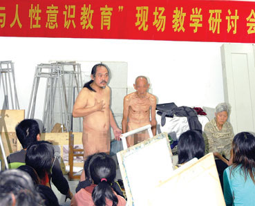

裸体教学不等于露阴癖，为教授裸教鼓掌！
2006/9/27 20:19:16

这两天，陈高官的落马使得一切新闻都很难新闻，不过还是有一个新闻被新闻了，就是56岁的“人体艺术与人性文化研究”国家级研究课题主要负责人莫小新教授当众“裸体教学”一小时，引用如下：
“在讲述人的身体特征时，莫教授告诉大家，“我的情绪可以反映在自己的身体上，只要一上火一着急，大腿就会起疙瘩。”众目睽睽下，莫教授接着做出了让人难以想象的举动。“当时莫教授情绪看上去很激动，完全一副忘我的境界，说着说着就解开了衣带，赤露着身体站在讲台中央的位置。”莫教授光着身子面对着学生授课时，神情镇定地讲解说，“我自己56岁的身体形状如此，可以反映我那个时代的特点，强调劳动和自然美。”莫教授还幽默地表示，他的“虎背熊腰”也是因为自己有十几年的劳动经历而在身体上烙下的“历史印迹”。”
一个最直接的反应就是把莫教授当成露阴癖，但这种推论是不能成立的。露阴癖必须有相应行为导致的人体反应。对于男性性别的莫教授来说，最基本的反应就是身体某部位的充血。但是，在莫教授整整一个小时的教学中，这种明显的生理反应并没出现。（当然，本ID并不在场，但现在的报纸如此八卦，如果真有这种反应，当场这么多人，总会被报纸所仔细描述的。而事实上，这种情况并没出现。）即使说莫教授56岁的人，生理反应的过程要比年轻人慢，但一个小时，怎么都足以完成这个生理反应。而这种反应没出现，只能证明莫教授在这种裸露中并没有或者说并不是为了去寻求某种快感，因此露阴癖的结论根本不能成立。
必须注意到，莫教授曾有专著《审视赤裸——人体艺术与人性思考》，对于他来说，这个课题被他研究了很多年了，对于一般人来说很过分的行为，在他的研究视角下，并没有任何特别的地方。把裸体和淫荡挂钩，是一个很愚昧的想法。那种看到裸体就有生理反应或思想波动的人，才是不成熟的、委琐的人！可以肯定地说，在那些指责莫教授的人中，基本上都上过黄色网站，看过各种各样的裸体照片。反过来道貌岸然地装孙子，简直就是人渣。
当然，这里并没有鼓励任何人在公共场合毫无理由地裸露身体，莫教授当时是在讨论人体艺术的课堂上发生这种事情的，而从新闻图片上，旁边还有一个老年模特也裸露着，所以更证明这不是一件很特别的事情，只不过莫教授对自己的身体有信心，即兴当了一回模特，这又有什么值得大惊小怪的？这世界就是闲人太多，该干什么干什么去，散了吧！